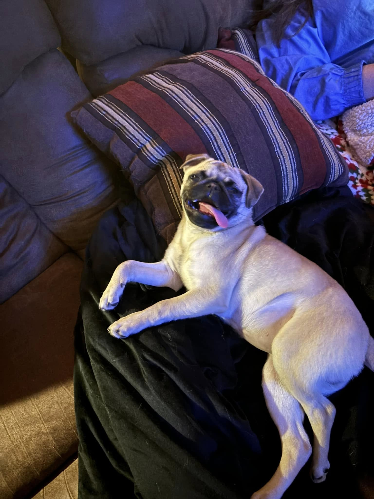

🎓 Denison University '29
✨ Any Pronouns
🏡 Springfield, PA
👑 President & PR Chair: Anime & Manga Clubs
About Maddie Jensen 🌸✨
Psychology Major • Anime & Manga Clubs President & PR Chair • Digital Humanities Researcher • Pug Lover

🐾 Study buddy Angel Baby
Welcome to My Space!
Hi! I'm Maddie Jensen (any pronouns), from Springfield, Pennsylvania! I'm currently a student at Denison University in Granville, Ohio, studying Psychology with deep interests in community leadership, creative storytelling, and critical making.
My Core Passions & Activities
- Anime & Manga Leadership: Serving concurrently as President and Public Relations Chair for both Denison's Anime Club and Manga Club. I lead executive governance, campus screenings, discussion events, and all promotional marketing across campus.
- Favorite Anime Series: Huge fan of Toilet-Bound Hanako-kun, Studio Ghibli's Howl's Moving Castle, My Hero Academia, Fruits Basket, and Spy x Family! (Check out my Anime Showcase on the homepage!)
- Digital Humanities: Exploring the intersections of computation, storytelling, AI ethics, and cultural preservation in DH 101.
- Community Impact: Founder of Madison's Mission, a charitable initiative that has provided over 400 comfort teddy bears to children facing trauma in emergency situations.
- Angel Baby: Caring for my sweet, silly pug Angel, who is always ready to snooze on my lap while I study!
"The digital realm gives us the tools to analyze the world, but it's human empathy and care that give it meaning." 💖
Digital Humanities 101 Portfolio
On this site, you can explore my semester journey in DH 101 with Professor Fran Lopez-Martin:
- Weekly Reflections: Ongoing thoughts on technology, labor, and machine intelligence.
- Critical Makes: Hands-on creative artifacts and prototypes built across the semester.
- Accessibility Statement: How I strive to make digital projects inclusive for all users.
- How I Use AI: My framework for ethical and transparent AI collaboration.